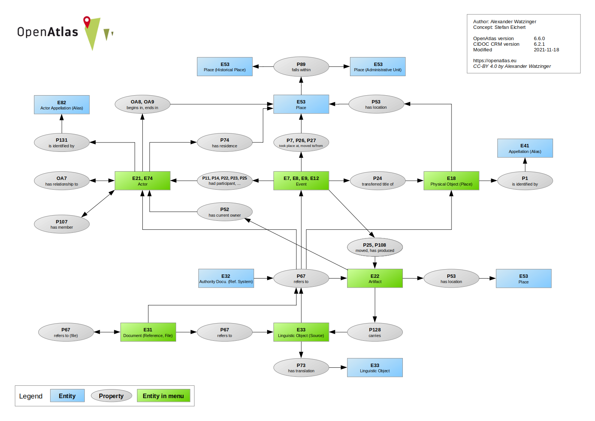
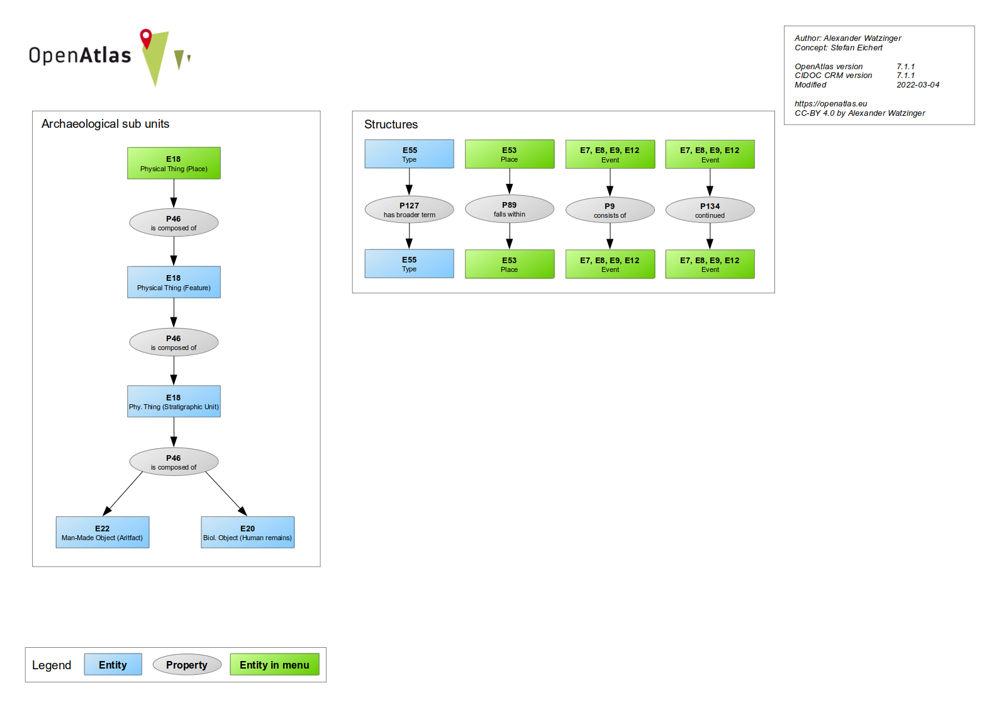

Model¶
The software automatically maps information to the international standard of the CIDOC CRM. The CIDOC CRM was imported to the system, can be browsed and is used to verify link conformity between entities.
Although it was paid much attention to design a web interface where users don’t have to be aware of the underlying data model, interested user can get insights how their data is mapped.
After login there is a Model button on the start page which leads to a graphical presentation of the model (see below), a link checker and links to browse the classes and properties.
 You can also active the advanced Layout in your Profile which displays the CIDOC class of an entity at the detail view.
CIDOC Classes¶
All entities belong to a CIDOC class. E.g. a person has the class Person (E21). In the overview table you can browse the classes and see how often they were used. A click on the class name will get you to a detail view with more information, e.g. a description and their super and sub classes.
CIDOC Properties¶
Entities are linked with a CIDOC property. E.g. if you select a location for an activity, the Activity (E7) will be linked with the property took place at (P7) to a Place (E53).
OpenAtlas Classes¶
OpenAtlas uses the CIDOC in the application but because of contextual differences we needed a more fine grained model for the user interface. E.g. E33 Linguistic Object can be a source or a source translation which have different forms in different context.
Following the OpenAtlas Classes link you will see an overview of classes used in OpenAtlas with details such as corresponding CIDOC class, used standard type, user access and more.
Link Checker¶
With the link checker you can test if certain class and property connections are CIDOC CRM conform.